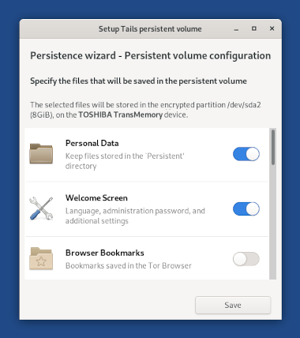

This release fixes many security vulnerabilities. You should upgrade as soon as possible.
New features
We added a new feature of the Persistent Storage to save the settings from the Welcome Screen: language, keyboard, and additional settings.
To restore your settings when starting Tails, unlock your Persistent Storage in the Welcome Screen.

Changes and updates
Update Tor Browser to 10.0.
Update Thunderbird to 68.12.
Update Linux to 5.7.17. This should improve the support for newer hardware (graphics, Wi-Fi, etc.).
Configure KeePassXC to use the new default location Passwords.kdbx. (#17286)
Update python3-trezor to 0.12.2 to add compatibility with the new Trezor Model T.
Fixed problems
- Disable the feature to Turn on Wi-Fi Hotspot in the Wi-Fi settings because it doesn't work in Tails. (#17887)
For more details, read our changelog.
Known issues
None specific to this release.
See the list of long-standing issues.
Get Tails 4.11
To upgrade your Tails USB stick and keep your persistent storage
Automatic upgrades are available from Tails 4.2 or later to 4.11.
If you cannot do an automatic upgrade or if Tails fails to start after an automatic upgrade, please try to do a manual upgrade.
To install Tails on a new USB stick
Follow our installation instructions:
The Persistent Storage on the USB stick will be lost if you install instead of upgrading.
To download only
If you don't need installation or upgrade instructions, you can download Tails 4.11 directly:
What's coming up?
Tails 4.12 is scheduled for October 20.
Have a look at our roadmap to see where we are heading to.
We need your help and there are many ways to contribute to Tails (donating is only one of them). Come talk to us!